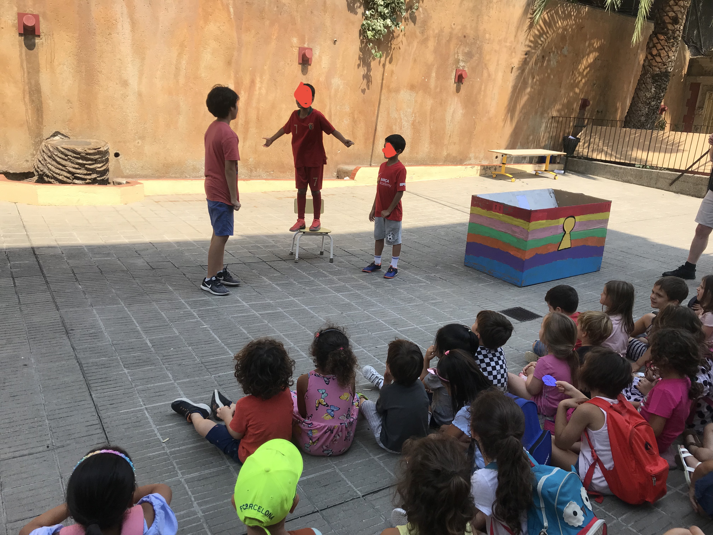
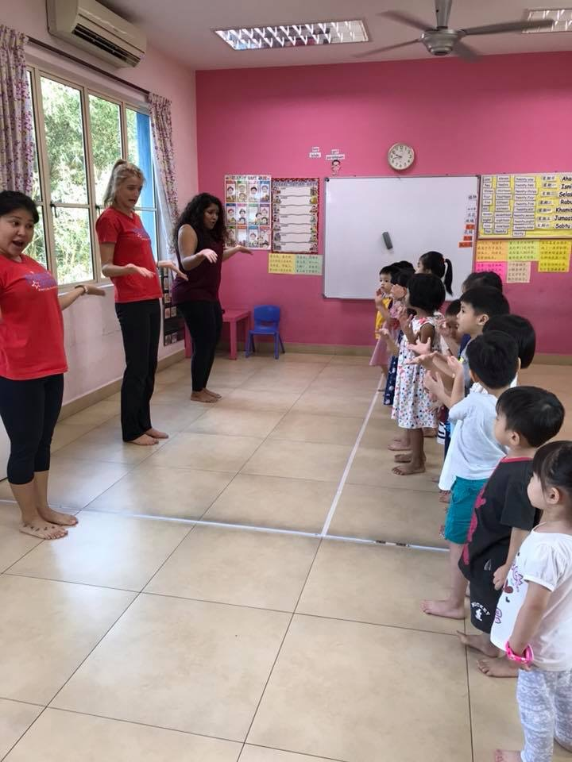
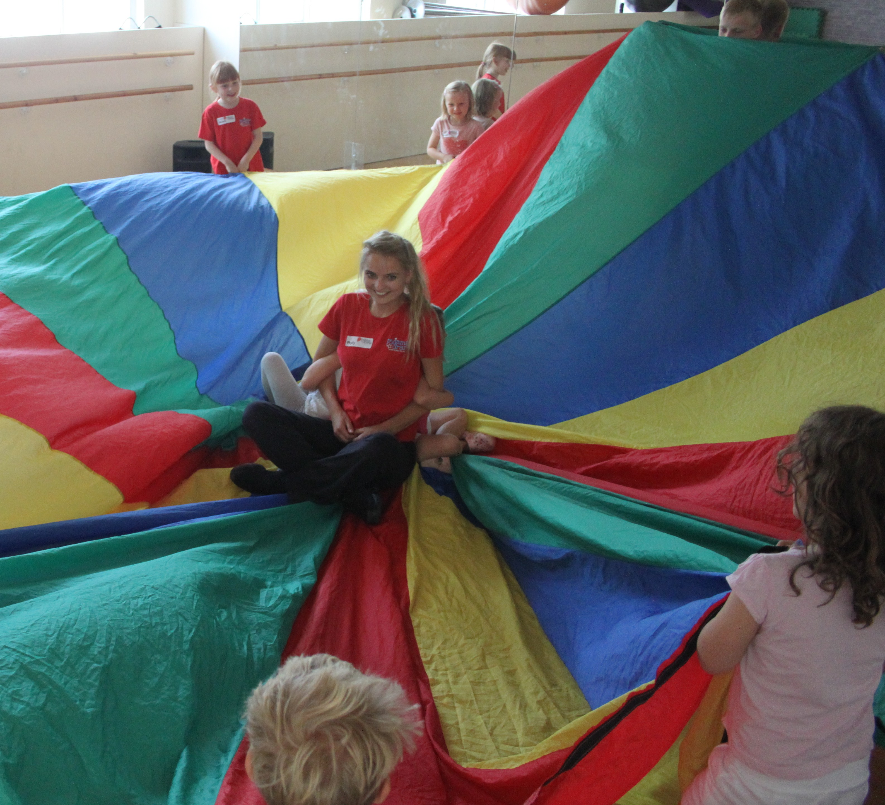
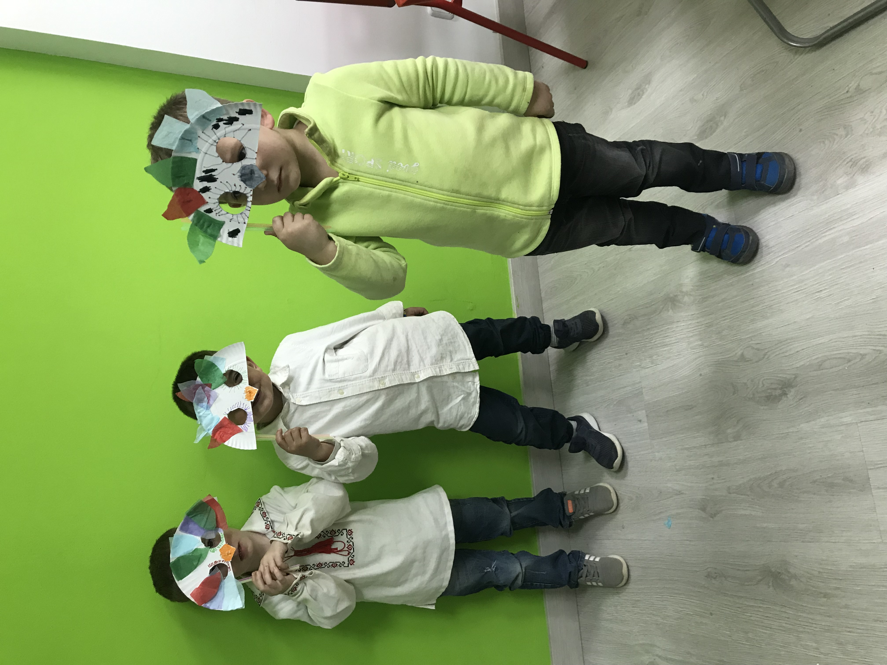

What is Applied Theatre?
Applied theatre refers to the use of theatrical forms in non-traditional theatre spaces to explore issues of interest and concern to communities. International research has validated the effectiveness of applied theatre techniques in shifting attitudes and behaviours.
Applied Theatre processes:
- Engage students and teachers in meaningful dialogue about the issues under discussion;
- Facilitate a safe environment whereby students can engage both cognitively and affectively with the material;
- Provide a stimulus for an ongoing exploration of the issue rather than a one-off hit (and miss);
- Provide fully interactive theatre processes that engage students in theatre making themselves.

How can an Applied Theatre intervention support children in an educational institution?
Applied Theatre offers a multimodal approach to learning that invites children to feel safe, confident and motivated to explore new areas of knowledge. In this creative environment, students will discover new parts of their own identity and connect with others, the curriculum and the world around them. Applied Arts can provide an inclusive environment connecting all types of learners from a variety of linguistic and cultural backgrounds to their learning material.


